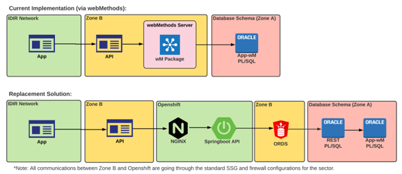

Existing Integration Architecture and Established Patterns
The Justice and Public Safety Sector (JPSS) is focused on providing solutions that fit business needs
rather than a one-size fits all approach. We are working towards implementing JADE – Justice and Public
Safety Sector Integrated Agile Digital Ecosystem. JADE is a client-centric, data driven and agile
approach to support and build a modern and transformative digital ecosystem with interoperability and
data exchanges across internal and external applications.
JADE will provide Justice and Public Safety Sector organizations with a business integration platform
consists of tools, tech, services, governance, and resources to develop and maintain their digital
solutions. This allows the sector to function as one single digital organization.
The JADE concept is fully in alignment with the JPSS Digital Strategy and will improve:
- stakeholder relationships
- timeliness of ISB service delivery
- business processes
- vendor-developer relationships
- re-use of commons services (i.e., reducing costs)
- service availability and reliability
One proven integration pattern for replacing webMethods integration component.

Note – while some applications use our existing webMethods platform, we are working on modernizing it to
some of the latest and greatest tech so it is not available to use as integration service.